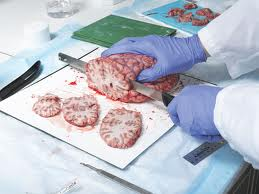

WELCOME TO M BIOLOGY.COM

|
 The brain is the center of the nervous system in all vertebrate and most invertebrate animals—only a few invertebrates such as sponges, jellyfish, adult sea squirts and starfish do not have one, even if diffuse neural tissue is present. It is located in the head, usually close to the primary sensory organs for such senses as vision, hearing, balance, taste, and smell. The brain of a vertebrate is the most complex organ of its body. In a typical human the cerebral cortex (the largest part) is estimated to contain 15–33 billion neurons,[1] each connected by synapses to several thousand other neurons. These neurons communicate with one another by means of long protoplasmic fibers called axons, which carry trains of signal pulses called action potentials to distant parts of the brain or body targeting specific recipient cells. Physiologically, the function of the brain is to exert centralized control over the other organs of the body. The brain acts on the rest of the body both by generating patterns of muscle activity and by driving secretion of chemicals called hormones. This centralized control allows rapid and coordinated responses to changes in the environment. Some basic types of responsiveness such as reflexes can be mediated by the spinal cord or peripheral ganglia, but sophisticated purposeful control of behavior based on complex sensory input requires the information-integrating capabilities of a centralized brain. From a philosophical point of view, what makes the brain special in comparison to other organs is that it forms the physical structure that generates the mind. As Hippocrates put it: "Men ought to know that from nothing else but the brain come joys, delights, laughter and sports, and sorrows, griefs, despondency, and lamentations."[2] Through much of history, the mind was thought to be separate from the brain. Even for present-day neuroscience, the mechanisms by which brain activity gives rise to consciousness and thought remain very challenging to understand: despite rapid scientific progress, much about how the brain works remains a mystery. The operations of individual brain cells are now understood in considerable detail, but the way they cooperate in ensembles of millions has been very difficult to decipher. The most promising approaches treat the brain as a biological computer, very different in mechanism from electronic computers, but similar in the sense that it acquires information from the surrounding world, stores it, and processes it in a variety of ways. GET MORE OUTLINE It's an outline of human brain. PARTS Parts of brain. |